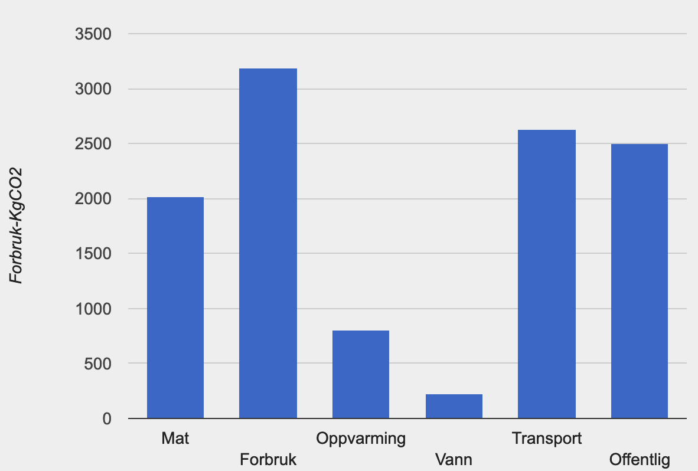

Jeg er 25 år gammel og kommer fra Vennesla. Jeg har tidligere studert teologi, religion og filosofi. Nå studerer jeg IT på Uia.
Her en utregning av mitt Klimaavtrykk som tar med mat, forbruk, oppvarming, vann, transport og offentlige faktorer. Forbruket vises i kg Co2 per år.
